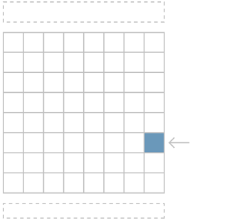
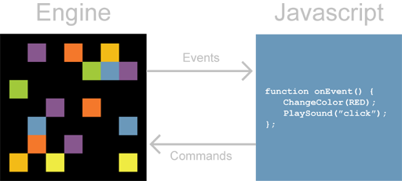

![[Logo]](images/logosm.png) Perlenspiel3
Perlenspiel3Learning
This is a summary of how to set up and begin experimenting with Perlenspiel.
The engine has many features not explained here. Consult the API documentation for a complete description.
- Set up your programming environment
- Basic concepts
- How the engine works
- Your first script
- Using the debugger
- Adding glyphs
1. Set up your programming environment
Any basic text editor can be used to edit Javascript code.
However, you should not use a basic text editor for significant programming!
Your productivity will be greatly magnified by using an integrated development environment (IDE) specifically designed for HTML5/Javascript development. An IDE combines facilities for editing and running code with powerful debugging tools that can save you hours and hours of frustration.
It can take an entire afternoon to track down an obscure syntax error in your code. A professional IDE will point out such errors as you type them.
How would you rather spend your time?
My current IDE recommendation for Windows-based development is Webstorm by Jetbrains. Webstorm is loaded with impressive features that greatly facilitate the development of HTML5/Javascript applications, including Perlenspiel games. If you’ve already used other professional IDEs like Visual Studio or Eclipse, Webstorm will feel very familiar. If you haven’t, Webstorm will serve as a good introduction to what to expect from a good IDE.
Webstorm is commercial software, but it’s very inexpensive. Students and teachers can buy an academic license for just US$29.00 per seat, an incredible bargain for software this useful. However, schools, colleges and universities can apply for a free license that applies to the entire institution. WPI has such a license. Ask your instructor for details.
Webstorm supports “live” debugging in both Firefox and Chrome. Both browsers need a custom extension to enable this feature. Webstorm automatically installs the Firefox extension the first time you need it, but the Chrome extension must be installed manually. To do this, start Chrome and visit the Chrome Web Store. Search for “Jetbrains” and install the free Jetbrains IDE Support extension.
Setting up a new Perlenspiel project with Webstorm is easy:
1. Create a directory for your project in a convenient place. Name the directory to match the title of your project.
2. Copy the Perlenspiel devkit files game.html and game.js into your project directory.
3. In Webstorm, select File->New Project from the main menu. A dialog box will appear.
4. Press the browse button at the end of the Location field, and navigate to the location of your project folder. The Project Name field will be automatically filled in with the name of your folder. Leave the Project Type field set to Empty Project. Click the OK button.
5. Webstorm will ask if you want to create your project using existing files. Click the Yes button.
That's it! Your new project will appear at the top of the file list on the left side of the IDE. Press the + button beside your project name to reveal the game.html and game.js files. Open the game.js file and edit it to create your game.
To test your work, open the game.html file. Move your cursor near the top-right corner of the editor window. A line of icons representing the browsers available to Webstorm will appear. Click the icon of a browser and your game will launch.
When your project is finished, you can move it to the cloud by copying your entire project directory to a Web server, and run it by linking to the game.html file.
2. Basic concepts
Beads and the grid
A Perlenspiel page is divided into three areas.
The center of the page displays the grid, a rectangular matrix of colored cells.
Each cell in the grid is called a bead. You can change the color, transparency, scale and shape of each bead individually.
Bead borders
By default, each bead on the grid is enclosed in a border. You can individually control the width, color and transparency of the border on each bead. If a bead is square, you can also make each side of the border a different width.
Glyphs
Beads can contain a single Unicode character or glyph. The character code, color and transparency of each bead's glyph can be specified.
Referencing beads
The columns and rows on the grid are numbered from zero, starting at the top left corner. Beads are referenced by their column/row position in the grid. So the bead in the top left corner is always bead (0,0), the third bead in the second row is bead (2,1), etc.
This numbering convention is used for all bead-related commands. Get used to it.
Grid dimensions
The number of rows and columns in the grid is not fixed. You can specify any horizontal or vertical dimensions from a minimum of 1x1 (a single mighty bead) to a maximum of 32x32.
You can resize the grid anytime, even in the middle of a game. You can also change its background color.
Status and message lines
There are also two single-line text boxes, one above and one below the grid.
The text box above the grid is the status line. You can use the status line to communicate short messages to your players such as high scores, time limits or simple instructions.
The text box below the grid is the message line. This is used by the Perlenspiel engine to display internal status and error messages. You can't control the text that appears in the message line.
3. How the engine works
Despite its radical simplicity, Perlenspiel actually models the operation of a full-fledged industrial game engine.
By itself, Perlenspiel is dumb. It knows practically nothing about games or interactivity. All it knows how to do is draw beads in the grid, display text in the status line, and read the mouse, keyboard and/or touchpad. Without a game script, nothing happens.
Game scripts
Perlenspiel uses the Javascript programming language to control its behavior. Javascript is the most popular and widely-deployed programming language in the world. It is used to control the look and behavior of nearly all of the billions of pages on the World Wide Web. Using the latest HTML5 technology, Javascript is now being used to write complex Web-based applications, including many games. In fact, Perlenspiel is itself written in Javascript!
With Javascript, you can bring Perlenspiel to life.
Whenever the player moves or clicks the mouse, presses a key on the keyboard, or touches the screen, the engine tells Javascript where the cursor is, which bead got clicked or touched, or which key got pressed.
Javascript can respond by commanding the engine to change the appearance of one or more beads, play sounds, or display a text message in the status line. This event-driven interchange between the Perlenspiel engine and Javascript creates the entire game experience. Change the Javascript, and the behavior of the engine is completely redefined.
4. Your first script
This section is not going to teach you how to program, or the details of Javascript. It's just a quick demonstration of how to edit and run Perlenspiel scripts.
Using Webstorm, or the IDE of your choice, navigate to your project's game.js file and open it.
Scroll down a bit until you find some code that looks like this:
PS.init = function( system, options ) {
"use strict";
// Use PS.gridSize( x, y ) to set the grid to
// the initial dimensions you want (32 x 32 maximum)
// Do this FIRST to avoid problems!
// Otherwise you will get the default 8x8 grid
PS.gridSize ( 8, 8 );
// Add any other initialization code you need here
};
This function, PS.init(), is called whenever the player opens a Perlenspiel page. The function currently contains a call to PS.gridSize(), which tells the engine what the dimensions of the game grid should be.
Note that the function name begins with PS. in upper-case letters. All Perlenspiel function names follow this convention. Also note that single-line Javascript comments begin with an adjacent pair of left slashes (//).
Add the following code after the last comment line:
PS.init = function ( system, options ) {
"use strict";
// Use PS.gridSize( x, y ) to set the grid to
// the initial dimensions you want (32 x 32 maximum)
// Do this FIRST to avoid problems!
// Otherwise you will get the default 8x8 grid
PS.gridSize ( 8, 8 );
// Add any other initialization code you need here
PS.statusText( "Hello, world!" );
};
The PS.statusText() function puts a text message in the status line. This call will display the classic "Hello, world!" message when the game is initialized.
Scroll down a bit more until you find this code:
PS.touch = function( x, y, data, options ) {
"use strict";
// Uncomment the following line to inspect parameters
// PS.debug( "PS.touch() @ " + x + ", " + y + "\n" );
// Add code here for mouse clicks/touches over a bead
};
This important function, PS.touch(), gets called every time the player clicks on or touches a bead. The x and y parameters indicate the column and row of the bead that was pressed. (Ignore the data parameter for now.)
Add these two lines of code under the second comment line:
PS.touch = function( x, y, data, options ) {
"use strict";
// Uncomment the following line to inspect parameters
// PS.debug( "PS.touch() @ " + x + ", " + y + "\n" );
// Add code here for mouse clicks/touches over a bead
PS.color( x, y, PS.COLOR_RED );
PS.audioPlay( "fx_click" );
};
The command PS.color() tells the engine to change the color of a particular bead. The first and second parameters indicate the column and row of the bead to change. In this case, we are specifying the same row and column that was sent to the PS.touch() function, so it will always affect the bead that was just clicked.
The third parameter, PS.COLOR_RED, is the desired color (in this case, red). Note that the color constant begins with PS. and is in upper-case letters. All Perlenspiel constant names follow this convention.
The function PS.audioPlay() commands the engine to play a sound file.
Once you have made these changes, save the game.js file. Open the game.html file and run it.
The message Hello, world! should now be visible in the status line.
Click on any bead on the grid. It should change to red and play a “click” sound.
Congratulations. You are now a Perlenspiel engineer.
5. Using the debugger
When writing any type of program, it's very useful to be able to see what's going on in your code as it runs. The Perlenspiel debugger makes this fairly easy.
Go back to game.js and remove the // from the beginning of the second comment line:
PS.touch = function( x, y, data, options ) {
"use strict";
// Uncomment the following line to inspect parameters
PS.debug( "PS.touch() @ " + x + ", " + y + "\n" );
// Add code here for mouse clicks/touches over a bead
PS.color( x, y, PS.COLOR_RED );
PS.audioPlay( "fx_click" );
};
The PS.debug() command sends a text string to the Perlenspiel debugger, which is a special text box that is normally hidden under the message line. The code in the example uses Javascript's string concatenation syntax (the + sign) to construct a string that reports the x and y position of the bead that was clicked.
Save the file and run game.html again. When you click on a bead, you should now see its coordinates on the grid being reported in the debugger box.
If you are using Webstorm to edit your code, you have access to a whole range of professional debugging features, including breakpoints, expression evaluation and variable watching. These capabilities can save you many hours of work. Consult the Webstorm documentation for details.
A handy little shortcut
It would be very tedious to open and close Perlenspiel every time you make a change in a script. Luckily, you don't have to.
Return to your editor and change the PS.color() command so that the third parameter is PS.COLOR_BLUE instead of PS.COLOR_RED. Save the file.
Now switch back to your browser and click the Reload icon. This reloads the last page that was opened. The grid will clear as the engine is reset.
Click on a few beads to verify that they are now turning blue.
6. Adding glyphs
Go back to your game.js file. All the following line to the bottom of the function:
PS.touch = function( x, y, data, options )
{
"use strict";
// Uncomment the following line to inspect parameters
PS.debug( "PS.touch() @ " + x + ", " + y + "\n" );
// Add code here for mouse clicks/touches over a bead
PS.color( x, y, PS.COLOR_RED );
PS.audioPlay( "fx_click" );
PS.glyph( x, y, "P" );
};
The PS.glyph() command tells Perlenspiel to display a character inside the specified bead. The first two arguments are the x and y coordinates of the bead on the grid. The third argument is a string with the character you want to display. In this example, we use the capital letter P.
Save the script and run it. When you click on the grid, each blue bead should now contain a capital P.
If you prefer, you can pass an integer in the third parameter of PS.glyph() instead of a string. The integer should be the Unicode value corresponding to the desired glyph.